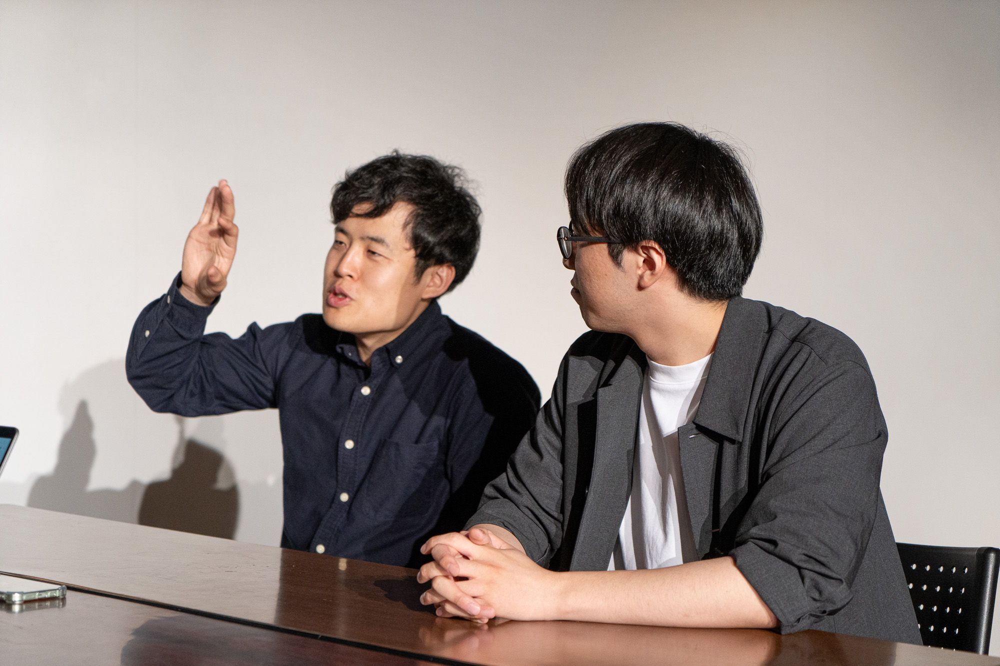
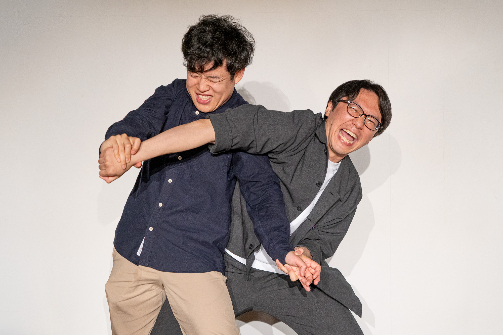
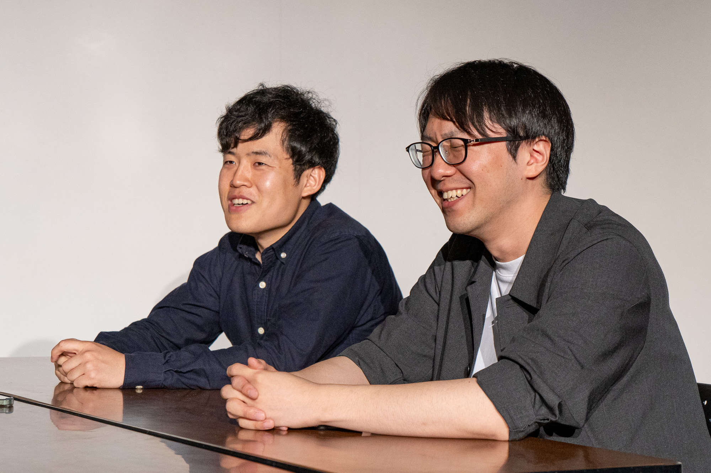
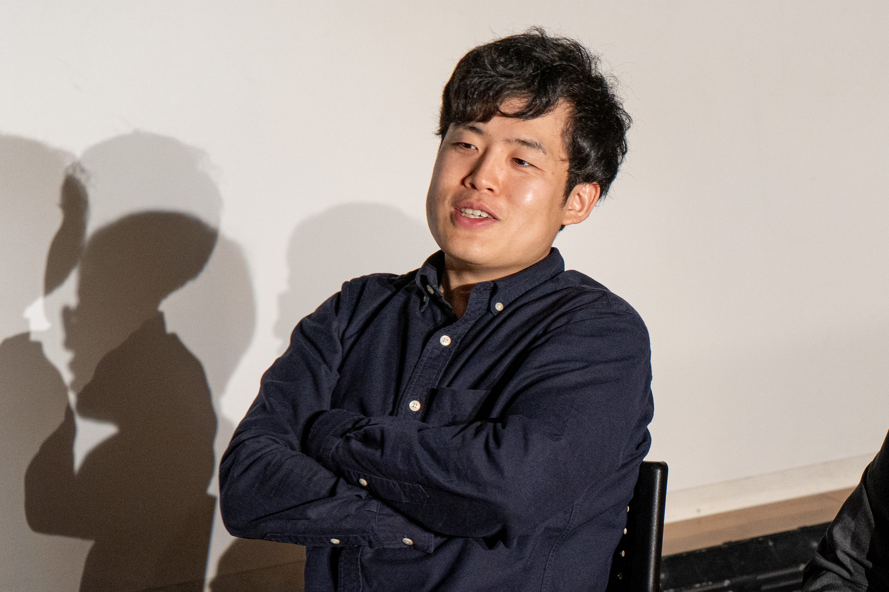
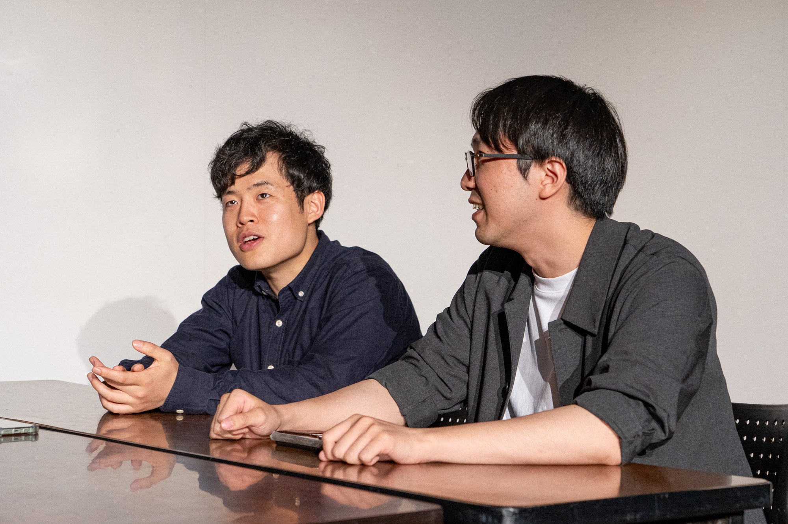
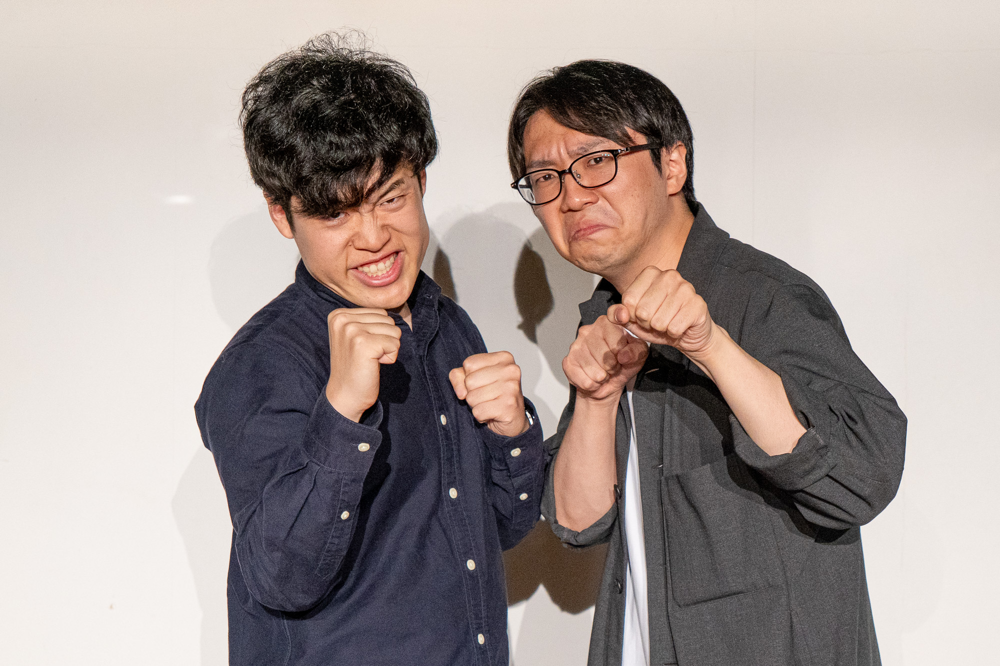

中学からの同級生、そして共にお笑いと音楽を愛する二人。
東京と福岡で離れて暮らし、社会人として働きながら舞台に立つ「ケイソウ」。
舞台やラジオなどで精力的に活動する二人の熱い想いに迫ります。

モトハマモトシ（写真左）・金村ソンタク（写真右）
- 1996年1月25日生まれ / 埼玉県出身
- 趣味・特技：トロンボーン、水族館巡り
- 職業：メーカー・技術職
- X：@keisou_fukuoka
ーー結成はいつですか？
モトハマ モトシ（以下、モトハマ）：2021年8月22日
金村ソンタク（以下、金村）：よく覚えてるね（笑）
モトハマ：乃木坂46の結成日の次の日だから。
金村：あー、さすが。
ーーケイソウのコンビ名の由来を教えてください。
モトハマ：それ言わないといけないですか？
金村：（笑）これね〜、嫌な名前のつけ方してるんですよね。
モトハマ：我々、慶應大学と早稲田大学出身のコンビなので、「早慶」ってあるじゃないですか。あれを逆にして「ケイソウ」にしてます。
金村：本当に気に食わないコンビ名なんですよね。
ーーお笑いをやろうと思ったきっかけを教えてください。
金村：これはね、2人で飲んでる時に話が出たんですよね。
モトハマ：出たというか、私がずっと漫才やってみたいなと思ってた話を彼にしたんですよね。
金村：社会人になってからね。
モトハマ：そう、そもそも社会人になってからお笑い始めたんですけど。学生の頃にお笑いやりたいって話を言ってて。2020年がコロナ禍だったじゃないですか。私が2020年に新卒で会社に入って、2020年、2021年めちゃめちゃ暇だったんですよね。外に行けないし。
で、「めっちゃ暇だわ」ってXに投稿したら「M-1のエントリー始まってるよ」ってきて。「ネタ書いてくれるなら一緒に出てあげる」ってなんか上からこられて。
金村：（笑）
モトハマ：じゃあ暇だし、ネタ作るか、っていって作ってみてM-1に出たのが最初です。理由は暇だったから（笑）
ーーもともと学生時代からの知り合いだったんですね？
モトハマ：そうです。12歳、中学からの知り合いです。
金村：お互い部活が中学・高校同じで。
モトハマ：吹奏楽部だったんですよ。トロンボーンとトランペットで。
金村：大学でも各大学のビッグバンドサークルに入っていて。ずっと音楽をやってました。
ーーお笑いライブの魅力はなんだと思いますか？
金村：やっぱり、演者との距離が近くなるっていうのはおもしろい点なのかなと思っていて。テレビの芸能人とかは全然自分たちとは違う世界の人を画面越しに見るっていうだけだと思うんですけど。お笑いライブ、特にアマチュアとかだといろんなところのライブに足を運ぶと演者も覚えますし、そこは魅力の一つだと思います。
モトハマ：そうですね、アイドルのライブとかに近いのかもしれないですね。私が行く理由は。やっぱり、生で観てみたい。そういうきっかけがある人は観に行くのかなと思います。
逆に、そういうきっかけがない人がどうやったら来てくれるか。自分が、よしもとの劇場に行く時は知名度がある人がいるとグッとお客さんの人数も増えるし。そうなると知名度とかも自ずと必要になってしまうのかなと思いますね。
金村：最初はなかなかハードルが高いですよね。
モトハマ：行こうと思わないしな。
金村：知り合いが出てるから、が一番多いですね。
モトハマ：福岡もあんまり知り合いいないですけど、東京でやる時とかは友達とか呼ぶんですよ。で、呼んだら「初めてお笑いライブ来ました」「そもそも行ったことなくて。お笑いライブ面白いですね。」っていう感じですね。
どんなきっかけでもいいですけど、例えば知り合いが出てるとか、よしもと福岡の劇場だったらM-1王者が来るとか、そこのきっかけ作りが必要なのかなと。
金村：そこが一番難しいけどね。
モトハマ：人によって最適解は違うとは思いますけどね。
ーー福岡でお笑いをすることの魅力を教えてください。
金村：我々ね、初めて舞台に立ったのがM-1の予選だったんですけど、その後ネタをやる場所を探していて。最初、福岡だと見つけられなかったんですよね。
モトハマ：そう、最初組んだ時は金村が福岡にいて私が東京にいて、今と逆の状況だったんですよ。で、私が福岡に転勤してきて、結局M-1しか出なくて。どこかライブに出たいねって話してたんですけど見つけられなくて。
2人とも福岡にいるのにわざわざ東京まで行って、「わらリーマン」のライブに出て。そうしたら、福岡でたまたま＋Funを見つけて入って、そこでいろんな人に福岡で出られるお笑いライブを教えてもらって、出始めたっていうのがきっかけで。
金村：福岡でここまでお笑いが盛んだというのを知らなくて、びっくりした。
モトハマ：ライブの数とかは東京と比べても劣ってないと思います。お客さんも来てくださいますし。やっぱり人に観てもらってこそだと思うので、やればちゃんとお笑いの文化が受け入れられる土壌があるのはいいのかなって思います。
ーーちなみに、M-1の予選はどこの会場で出場しているんですか？
（※M-1グランプリの予選は全国で行われており、2025年の1回戦は東京・大阪・広島・愛媛・新潟・宮城・沖縄・福岡・埼玉・千葉・愛知・北海道・静岡で開催される。）
金村：それか（笑）
モトハマ：今まで4回出てるんですけど、名古屋→名古屋→福岡→東京っていう超気持ち悪い出方してるんですよ（笑）名古屋にしたのは2021年の結成した時で、会社員で平日休めないから土日しか出れないねってなって、土日にやってるのが名古屋しかなくて名古屋になって。2回目は、なんでだっけ。
金村：まあ、去年も名古屋だったしぐらいのノリで。
モトハマ：で、名古屋行って。3回目はお互い福岡にいたので福岡で。去年は彼が東京行っちゃってたんで、私が東京に行って出ました。
ーーなるほど。
モトハマ：きしょいんですよ。
金村：ちょっと変な出方ですね。
ーーここからはお仕事についてお聞きします。今のお仕事を選んだ理由を教えてください。
モトハマ：私は、大学の研究が工場の生産性をどうやったら向上させられるかみたいなものをやったんですよ。それで、そのままの延長でメーカーに就職して今工場で働いてるっていう形ですね。なので、自分の研究を活かせるところで見つけたって感じですね。
金村：私は、中学・高校・大学とトランペットをやっていて、音楽が好きということで音楽系の会社で営業っぽいことをしているという感じです。
ーー働きながらお笑いをしていて良いことと大変なことを教えてください。
金村：良いことは、会社や友達との飲みで話題にできるっていうのは大きくて。ライブがあると呼んでみようかな、っていうのでより仲良くなれたりとか。あるいは、相方の知り合いもライブを観に来てくれるんで、相方経由の知り合いも増えて楽しいですし。っていうのはすごい良いなと思います。
で、大変なことといえば、やっぱり働きながらネタ合わせとか特に遠距離でやらないといけないので。まあそこはなかなか時間取ったり、どこでライブに出るかとかは大変かなと思いますね。
モトハマ：そうですね。私も、彼と一緒で、良かったことは話のきっかけになるなっていうのはあります。会社でもそうですし。それこそ私がお笑いをやってることをみんな結構知ってるんですよ。それで会社の工場で秋祭りがあるんですよ、従業員用の。そこで「漫才して」って言われてやったり。
去年とかは、茶兎のにしだくんと秋祭りの総合司会みたいなのをやって。最後にお楽しみ抽選会があるんですよ。そこでにしだくんがガンガン回して、それが好評で良かったですし。区長さんとか観に来て「良かったよ」とか言ってくれるんで、会社に変な貢献のしかたですけど（笑）
金村：（笑）
モトハマ：会社に貢献できてるのかなと、思いますね。で、大変なことは、仕事しながらなんで。特に、私北九州に住んでるので福岡市内で活動するとなると仕事との調整とかは大変ですね。
ーーお二人はライブの出演やラジオの投稿、モトハマさんはケイソウとは別でコンビを組んでライブに出るなど精力的に活動されていますが、活動のモチベーションになっているものはなんですか？
金村：そうですね。私は、まだM-1の1回戦を突破したことがないので（笑）
モトハマ：そう！ケイソウ4回M-1出てるけど、一回も突破したことなくて。私は去年ジャック（茶兎にしだとのコンビ）で突破してるので。
金村：そうそう（笑）
モトハマ：私はもういいかなと思ってるんですけど（笑）
金村：私のモチベーションはそこです！M-1の1回戦を突破したいなっていう。それだけで頑張ってるところはありますね。ケイソウでも突破したいです。
ーー今後の目標や挑戦したいことを教えてください。
金村：まあまずは、M-1の1回戦突破。
モトハマ：私は、どのような形でもいいのでM-1の3回戦に行きたい。YouTubeに載りたい。
金村：それはあるね。
モトハマ：そこを目標にしてやってます。どんな形でもいいんで！
金村：どんな形でも（笑）
モトハマ：コンビの形は問わない！
金村：そういうことね。
モトハマ：誰と組んでてもそこまで辿り着くっていうのを人生の目標にしてます。茶兎のにしだくんとのコンビ「ジャック」で去年1回戦突破して、2回戦に初めて行ったんですけど。ちょっとレベルが違ったなって実際出て思って。出番前、舞台袖で待ってるんですけど、前の3.4組がずっと拍手笑いが続いてて、それでも落ちてたりしたので。レベル違うなと思うけど、ちょっと行ってみたいなと思ったんで。どんな形でもいいんで！突破したいなと。
金村：知らない世界だ、、、
モトハマ：逆に去年そこで燃えたところはあります。それが目標です。
取材／木村 撮影／山田
「お悩み解決編」公開中！